Introduction
Awarded a New Frontiers Start-up Grant ($42,000) from Indiana University for 2013, the Petrarchive Project has advanced significantly in its goals for offering a “rich text,” interactive edition of one of the icons of western literature, Petrarch’s Rerum vulgarium fragmenta (Rvf). Wayne Storey, Professor of Italian, has collaborated with John Walsh, Associate Professor of Information Science, to produce six sets of distinctive textual prototypes based on Storey’s new edition of the work’s 366 texts that comprise the author’s poetry book. Our prototypes consist of:
- TEI-encoded documents from which we can render both diplomatic transcriptions and edited views of the text;
- Web-based presentations providing both diplomatic and edited views of the text, implemented with the TEI Boilerplate system;
- Facsimile page images for Lat. Vat. 3195;
- A visual index, or map, to the Rvf as constituted in Lat. Vat. 3195.
With these prototypes now in place, the editors propose to complete work on all 366 poems in their digital edition of Petrarch’s work, using Storey’s edition and commentary and following the Text Encoding Initiative Guidelines. This textual-visual project, the Petrarchive, will supply a state-of-the-art scholarly tool for students, teachers, and scholars of Petrarch’s formative icon for book culture and Western poetry, and provide an interactive and open-access edition for specialized and general audiences.
Prototypes
During 2013, we have worked through six subsets of texts that demonstrate diverse kinds of editorial and encoding issues that we felt it necessary to establish as guides for future work. All the subsets also demonstrate the emblematic nexus between Petrarch’s visual poetics and the editing of texts from a problematic holograph first designed as a fair copy, and that then degenerates into an experimental work site.
Subset 1A: Vatican Latino 3195, charta 1v
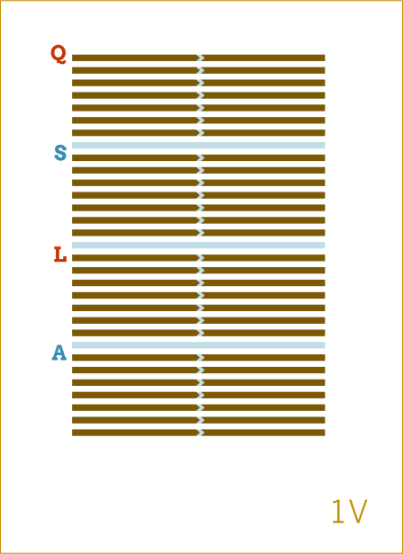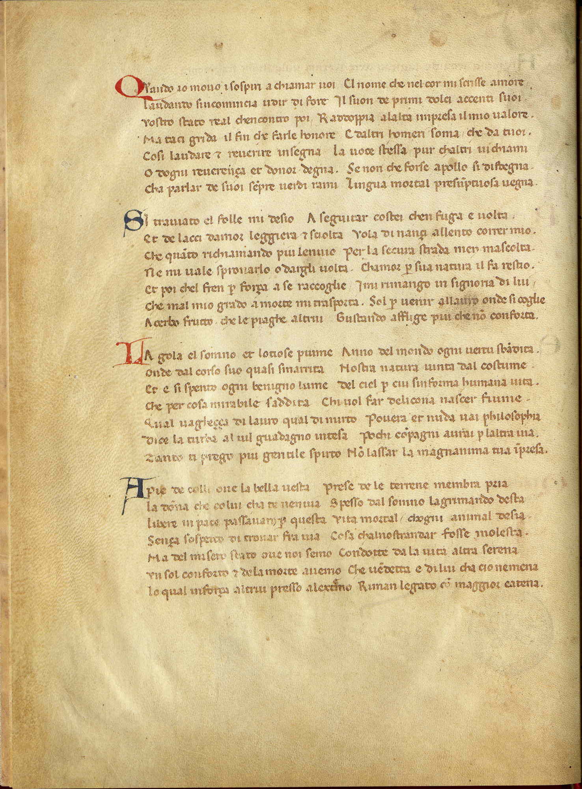Subset 1A establishes Petrarch’s first transcriptional and organizational principle for his 31-line canvas in his work: the four-sonnet construction of the manuscript leaf based on a 31-line transcriptional canvas. 62 of the 145 pages (62 sides of the 72 chartae) of Petrarch’s book follow this principle of four sonnets, each laid out on seven transcriptional lines, two verses per line, and read in a horizontal strategy. Each sonnet is separated from the next by a “separative blank line” space (thus 7+1+7+1+7+1+7 = 31). Encoders will use the encoding matrix for this principle for just over 42% of their work.
Subset 1B: Vatican Latino 3195, charta 22r
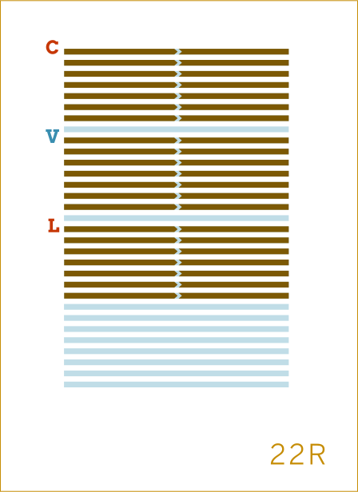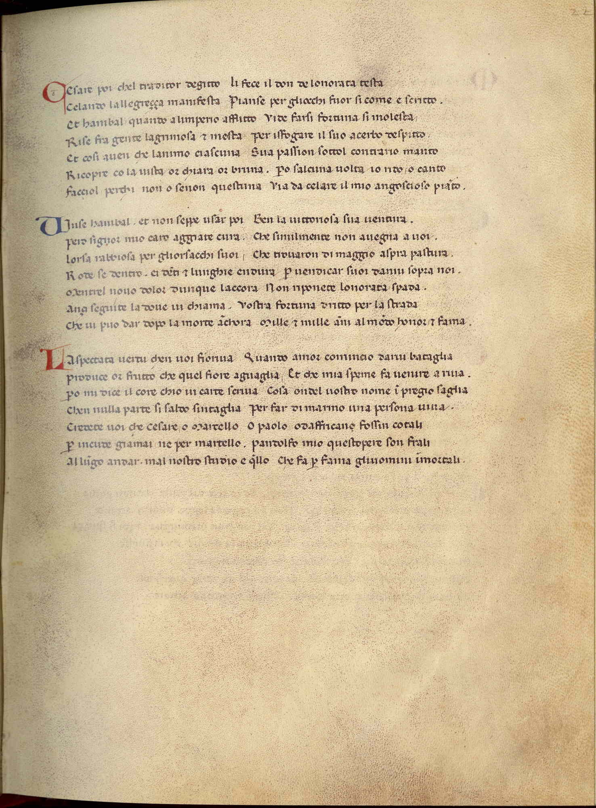Subset 1B demonstrates the subtle visual poetics of the rare disruption of Petrarch’s first principle and the unique use of expectation in the manuscript to call attention to a dramatic shift in the work’s narrative. Up to charta 22r the reader has seen 13 out of 42 pages that follow Petrarch’s four-sonnet principle. On c. 22r, Petrarch has his copyist skip the final seven transcriptional lines as what we encode as a “divisional stop space” between Rvf 104 and 105. Petrarch’s scribe could easily have started the following poem, “Mai non vo’ più cantar com’io soleva” (Rvf 105), as he would numerous times, in the remaining space of c. 22r. Instead, the “divisional stop space” sets off Rvf 105 as a poetic manifest: “Never again do I want to sing [poetry] as I used to.”
Subset 1C: Vatican Latino 3195, cc. 22v-23r
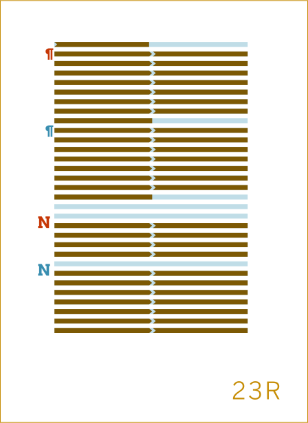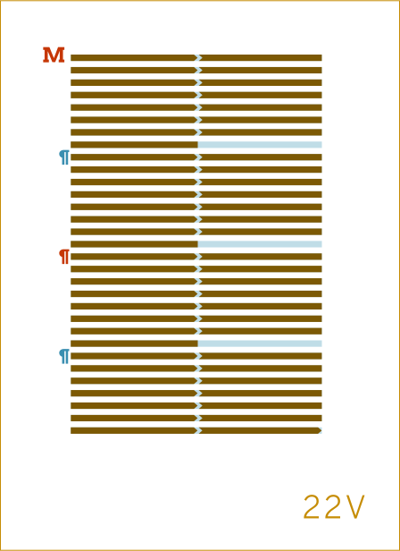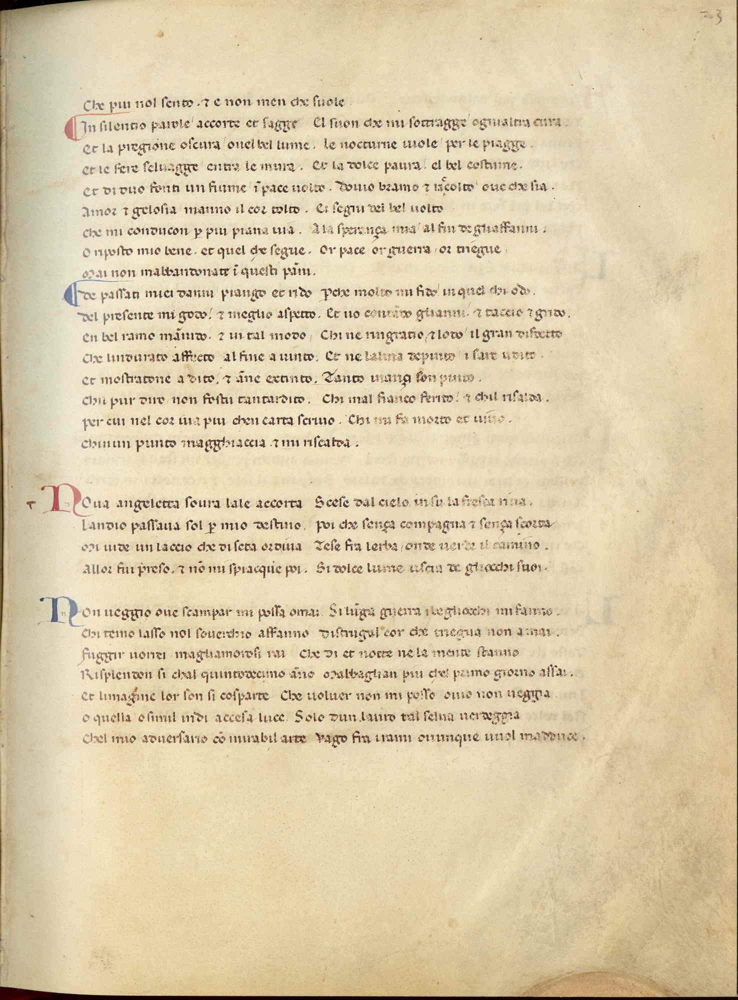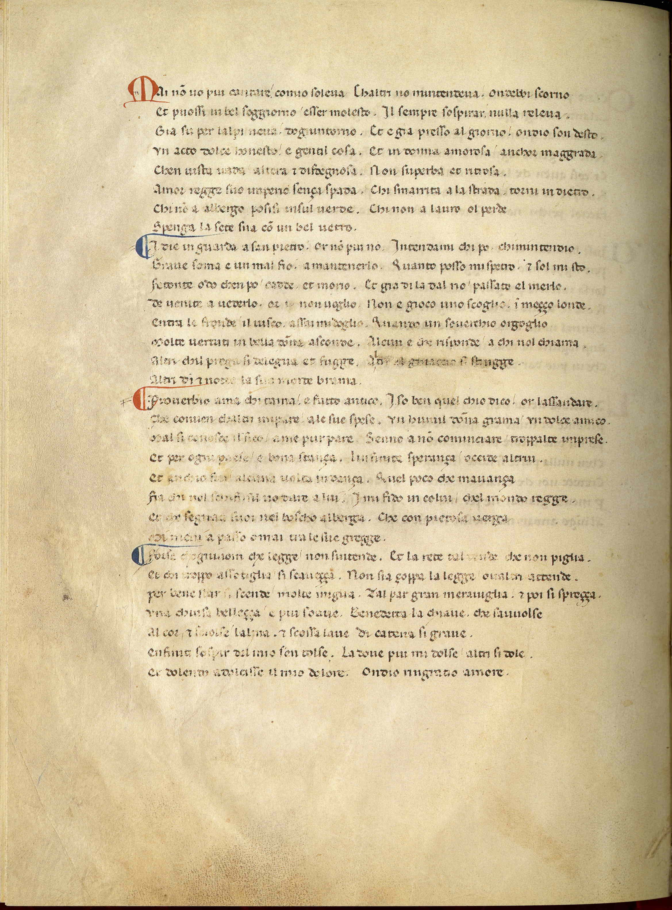Subset 1C demonstrates the function of c. 22r’s divisional stop space to mark the macrotextual pause between sonnet Rvf 104 and the manifest of Rvf 105. The editorial innovation of the easy comparison of the edited version of Rvf 105 to the diplomatic transcription allows advanced users to note errors and lexical features in the manuscript that distinguish among authorized and unauthorized versions of the work that circulated. The “divisional stop space” plays an important role in our editing of the first poem of Part II of the Rvf, “I’ vo pensando” (Rvf 264), which is preceded by a divisional stop space of five blank pages (four ruled for transcription). Editorially the ruled space also functions as “potential writing space” prepared to receive text but left blank.
Subset 2A: Vatican Latino, c. 3v
 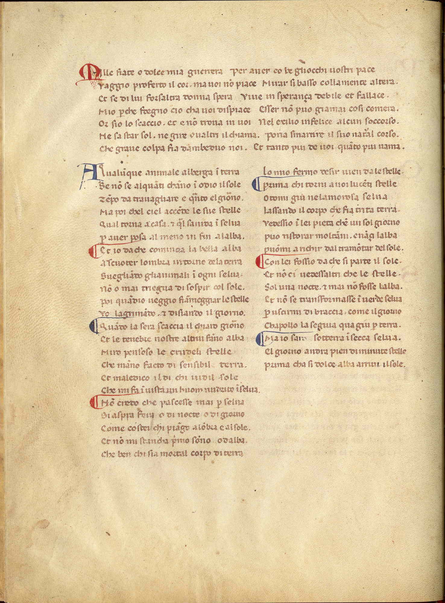
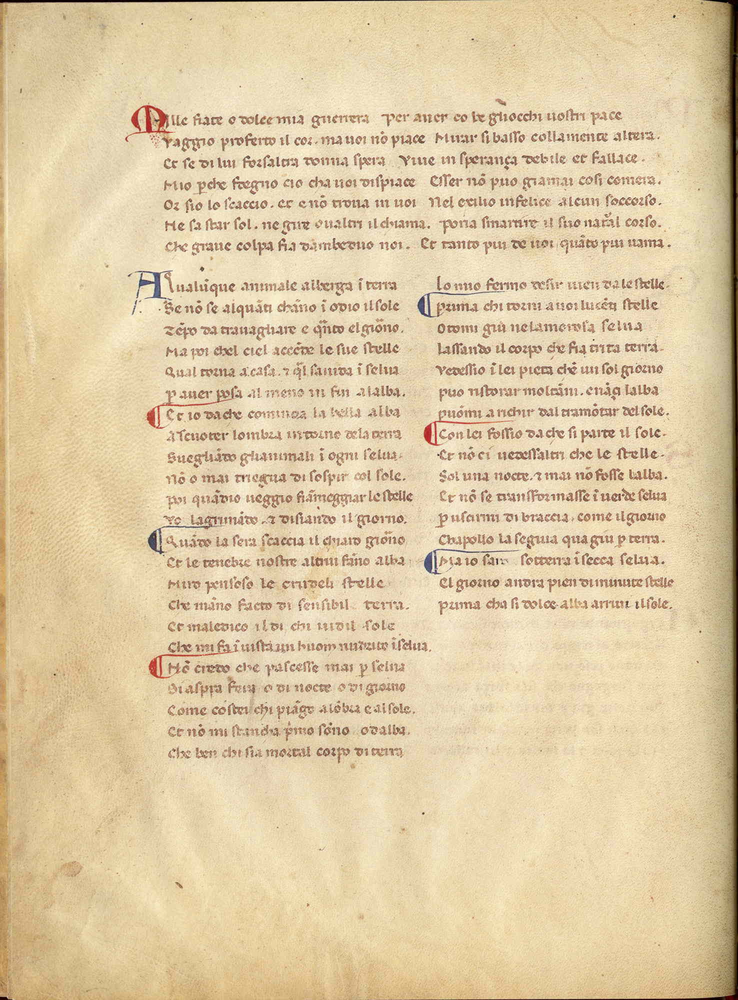Subset 2A demonstrates Petrarch’s second organizing principle, which has a unique impact on the page’s and the work’s indexicality, visual poetics, and use of punctuational space: the counterbalance between the sonnet’s horizontal reading strategy (“Mille fiate, o dolce mia guerrera” [Rvf 21]) and the sestina’s vertical reading strategy (“A qualunque animale alberga in terra” [Rvf 22]), first down the left column and then back up to the top of the right column, but without spaces between the stanzas marked only by pilcrows. The contrast between the two genres and their reading strategies is immediately visible in the uneven lengths of sestina’s two columns and the blank five-seven lines in the left column that act as “descriptive space” for the sestina.
Subset 2B: Vatican Latino c. 14v
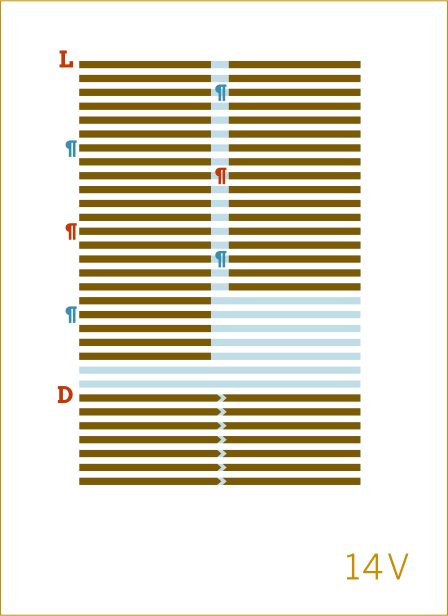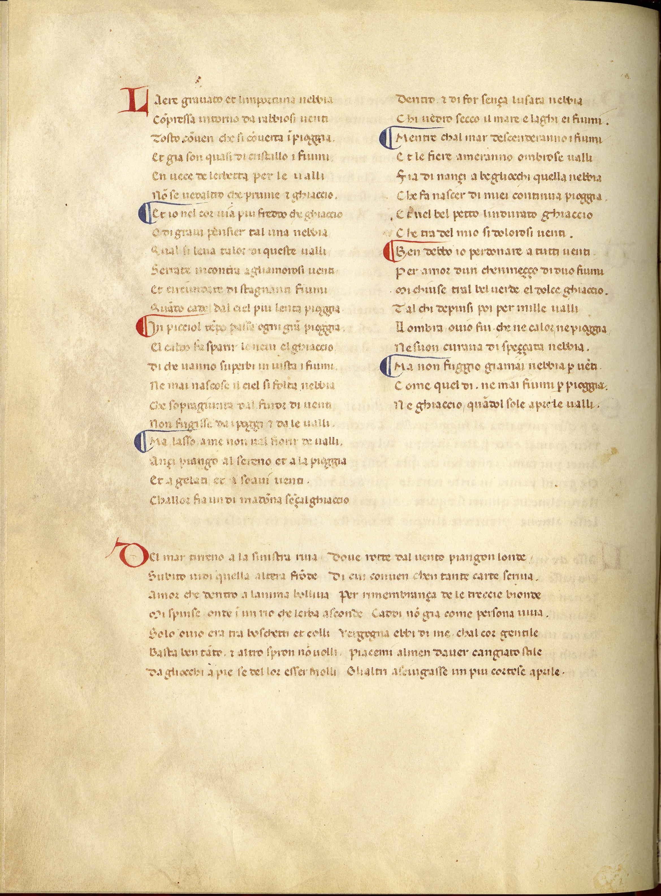Subset 2B demonstrates the reverse matrix for Petrarch’s second principle, the sestina “L’aere gravato et l’importuna nebbia” (Rvf 66) and the sonnet “Del mar Tirreno a la sinistra riva” (Rvf 67). Subset 2A and 2B will serve as an encoding guide for four other occurrences of the sonnet–sestina combination, and distinguish the scribal error in rendering the same combination on cc. 32r and 32v (Rvf 141–Rvf 142).
Subsets 3A-3B: Vatican Latino 3195, cc. 69v-70r; Laurenziano Segniano 1, cc. 52v-53r)
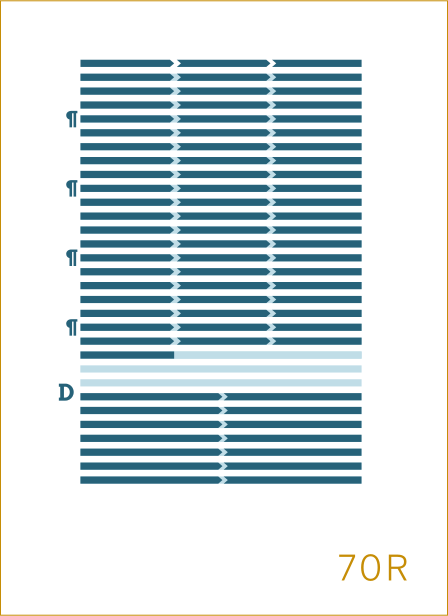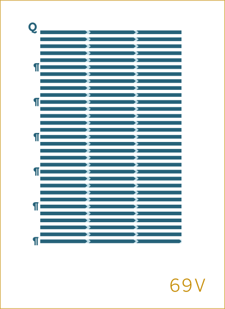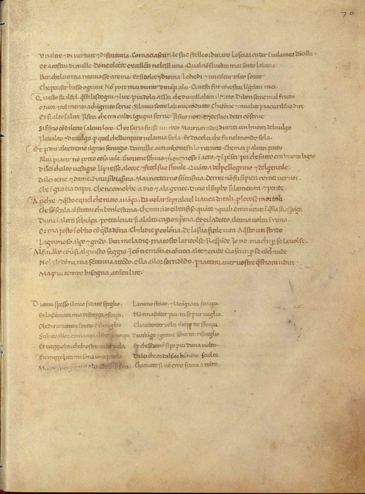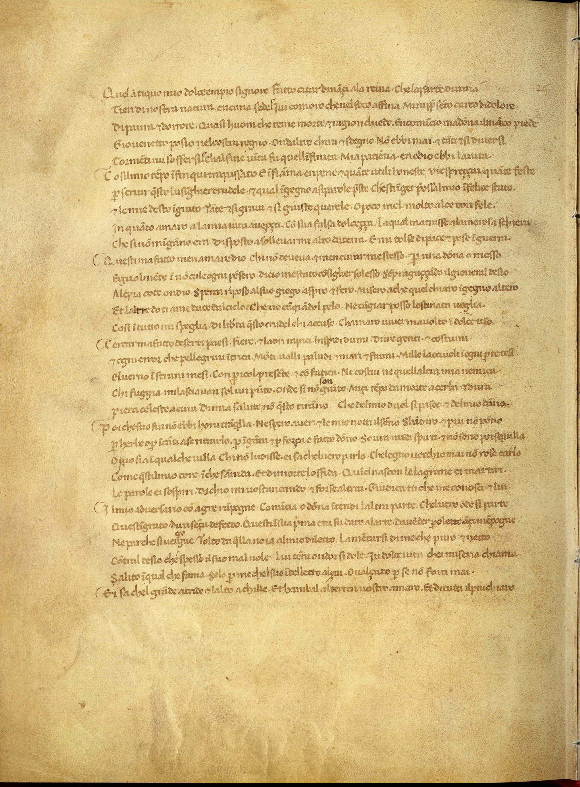Subset 3A–3B investigates keen editorial problems in the 157 verses of the canzone “Quel’ antico mio dolce empio signore” (Rvf 356 [revised as 360]) as a common site of reordering, another of Petrarch’s revisionist principles. After the Rvf was in circulation, perhaps as late as 1373-1374, Petrarch experimented several times with reordering the last 31 poems of the work, using small numbers in the margins of cc. 66v–71v. These numbers were never applied to a new order for poems 336–366 until Mestica’s edition of 1896. Of even greater editorial difficulty is the “reconstruction” of the format for the canzone “Quel’ antico,” which Petrarch decided to include on a four-page insert (2 bifolia) in which he did not have enough space to write out the canzone according to his standard transcriptional format (equal to that of the canzone “Una donna assai più bella che ’l sole” [Rvf 119]). The poem’s reconstruction is imaged from different manuscripts and editions since Petrarch was forced by a lack of material space to distort the poem in his own final transcription. Our edition allows the reader to move among Petrarch’s dense diplomatic transcription and the modern, virtual reconstruction of the diplomatic text (based on MS Laurenziano Segniano 1), and the edited form of the poem from additional, authoritative manuscripts.
Subsets 4A-4B: Vatican Latino 3195, c. 26r and c. 45r
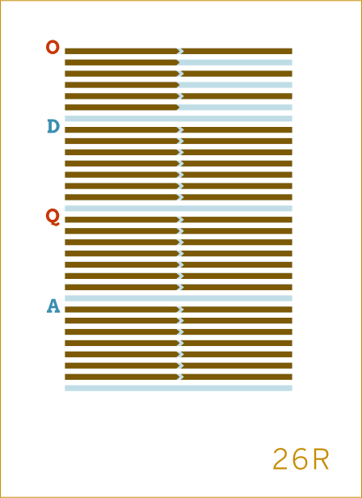 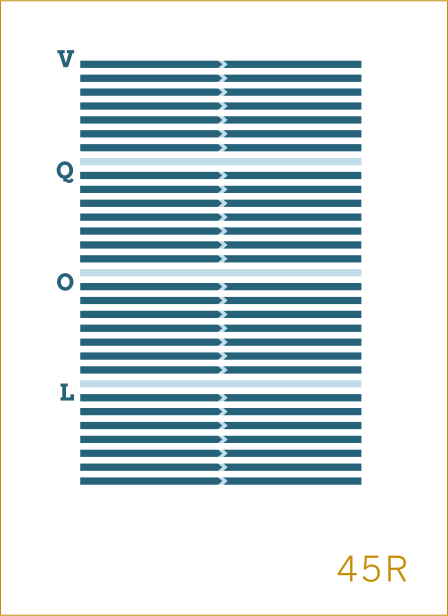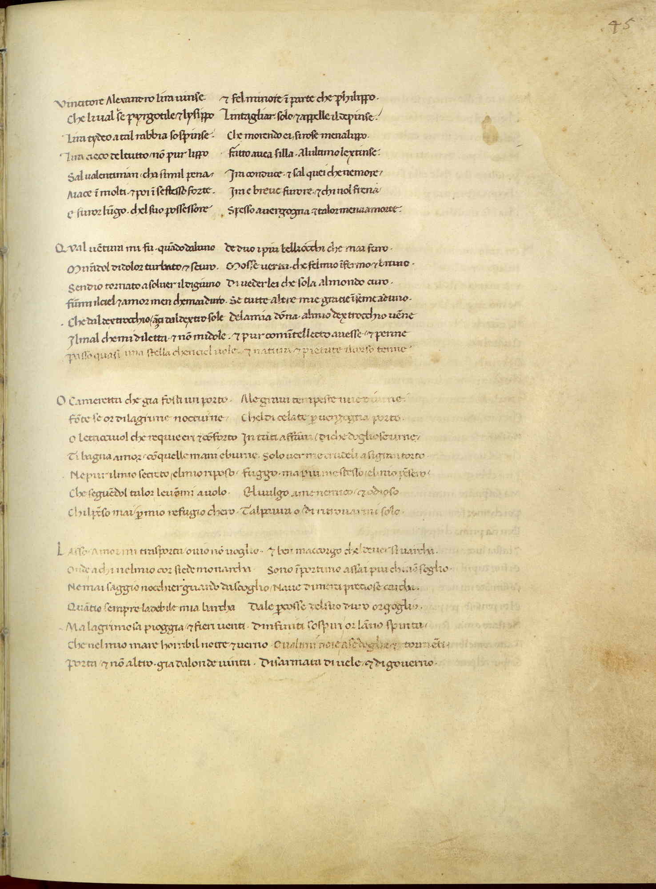
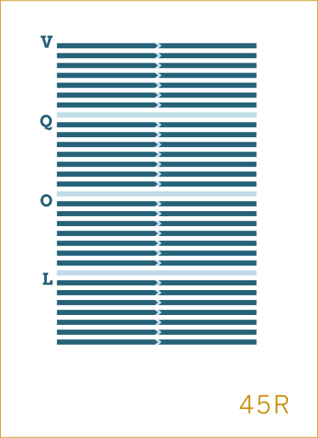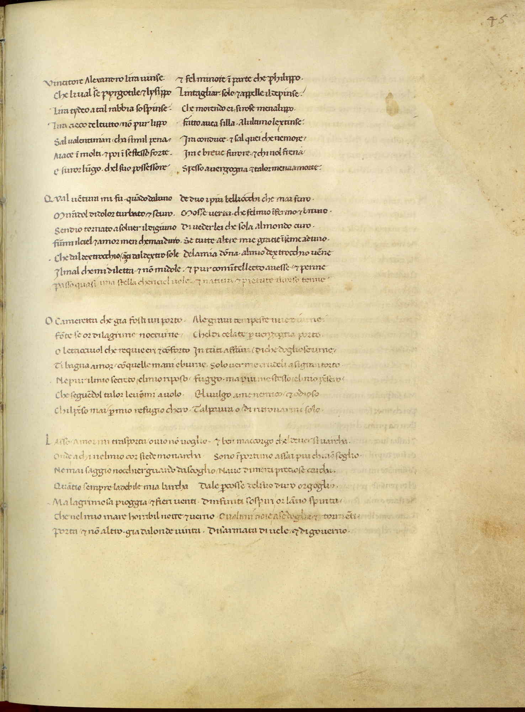
Subsets 4A and 4B solve the editorial problem of communicating the roles of palimpsest and erasure in Petrarch’s Rvf and his visual poetics. The problem of the complex versioning of poems through extensive authorial erasure and emendation is addressed, reconstructing the layers of the poet’s revisions both in his own manuscript and in subsequent manuscripts that reflect earlier and later versions. This fourth subset will consist of: A) the four poems on c. 26r, in which Petrarch attempts to maintain the fair copy status of the manuscript, and B) the four sonnets of c. 45r in which Petrarch has abandoned fair copy practices. Subset 4A treats the poet’s own attempt to recycle the rubricated D of the previous poem (“Donna mi vene spesso ne la mente”), after erasing the rest of the poem, to insert the shorter madrigal “Or vedi, Amor” (Rvf 121). The user can move among diplomatic and edited versions to reread previous and current sequences of this section. In Subset 4B we have instead established encoding principles for Petrarch’s frequent use of multiple erasures and emendations now easily consultable without disturbing the user’s primary reading of the edited version.
Subsets 5A-5B: Vatican Latino, c. 15r–15v
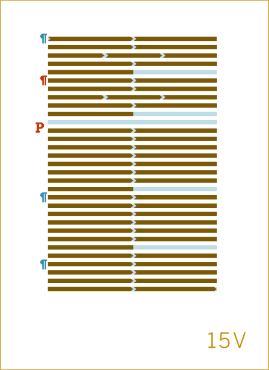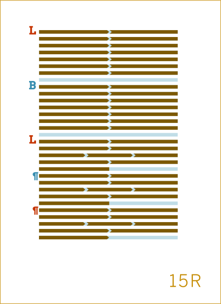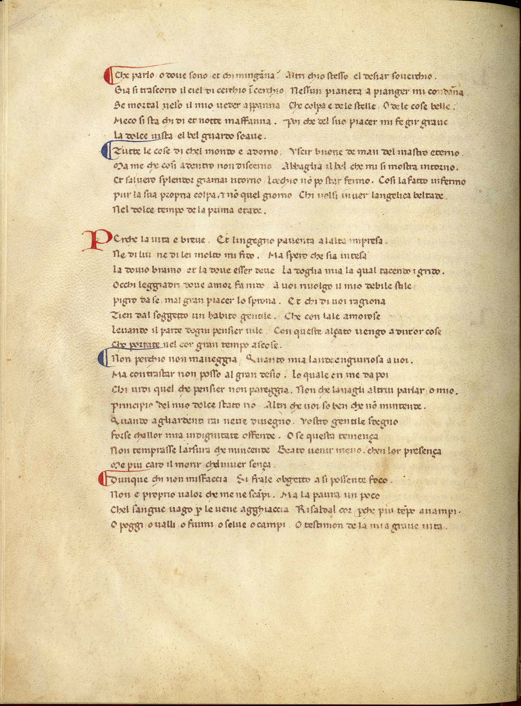
Subsets 5A and 5B reconstruct the complexities of textuality in diverse forms of longer poems (canzoni) in versions of the Rvf 70 (“Lasso me, ch’i’ non so in qual parte pieghi”), in which Petrarch singles out his quotations of other poets by isolating their verses on independent lines at the end of each stanza. This use of the play between transcription and space to highlight certain features central to the poetics of a given work will be borne out throughout the Rvf. In Subset 5A/5B the poet isolates the citation. Notably, in an authoritative copy of Latino 3195, Laurentian 41.10, the copyist literally underscores the cited verses.
Vatican Latino 3195, c. 39r
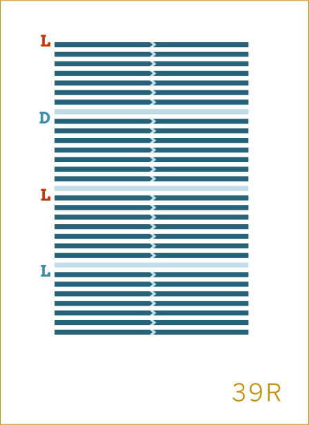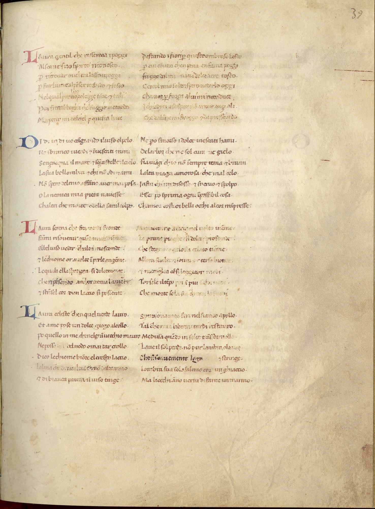Subset 6 establishes editorial and encoding strategies for multiple strata of erasure as part of Petrarch’s visual poetics and compilational techniques that range from the elimination of an entire sonnet (the first composition on the page [“L’aura gentil” [Rvf 194]) to multiple layers of expulsions in individual poems (sonnets 3 and 4 = Rvf 196 and 197 [“L’aura serena” and “L’aura celeste”]).
Visual Index
The textual and graphological representations of the text are supplemented by other resources developed for the digital edition. These resources include a visual index, or map, of Petrarch’s graphological enterprise. This map provides diagrammatic “wireframe” representations of Petrach’s layouts, categorizes those layouts, and will link from diagrams to individual texts.